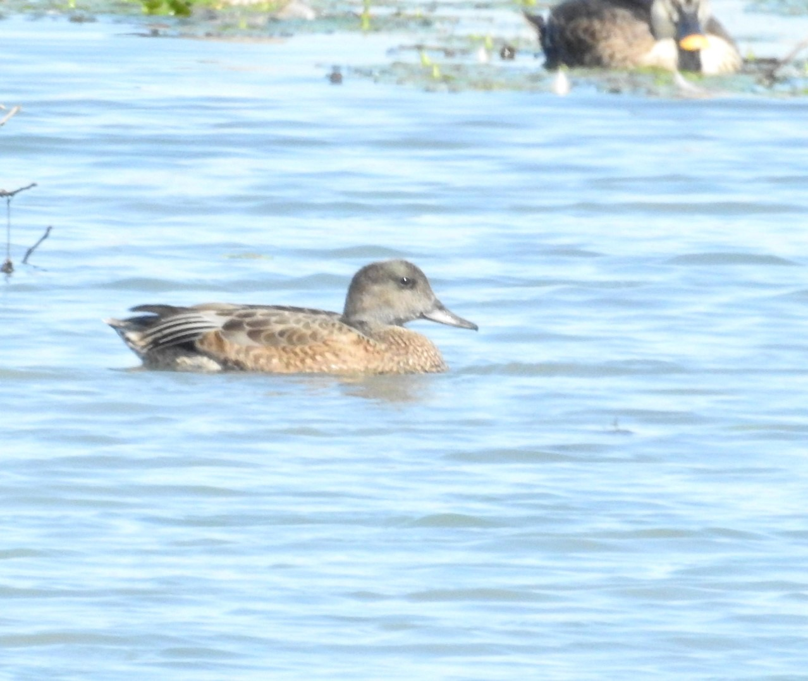
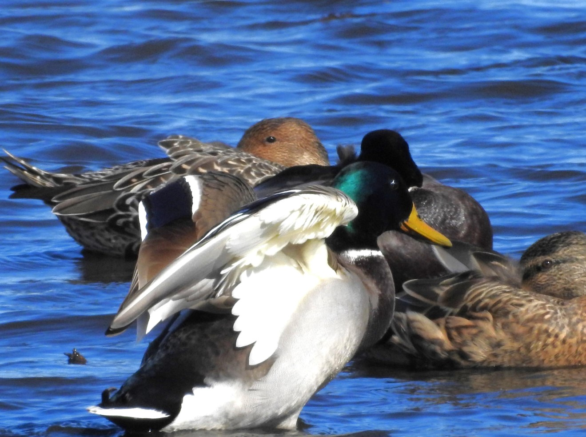

Geese, Swans, Ducks
コクガン
- 冬鳥。南三陸志津川湾の漁港や石巻湾、仙台市東部海岸で越冬。
- 家族の絆が強く、ファミリー単位で威嚇し合ったり、別ファミリーの個体を追い払ったりしている。
ガラが悪い - 志津川湾では潜水してアマモなどの海藻を食べるオオバンに絡んで、横取りしてしまう労働寄生の様子を観察できることがある。
ガラが悪い

ビジュは良いコクガン
ヒシクイ
- 蕪栗沼や伊豆沼には亜種オオヒシクイが越冬。嘴がなだらかで大きく、首も長い。
- 蕪栗沼では集団で越冬しているが、よく他個体を威嚇していてガラが悪い。鳴き声が他のガンと比べて低く、ちょっとおじさんみたい


{kind=link}
{kind=link}
{kind=link}
ツクシガモ Common Shelduck
県内でたまに見られる。観察できても次の日とかにはすぐ抜ける印象 
{kind=link}
{kind=link}
{kind=link}
ヨシガモ Falcated Duck
宮城県では少ない。秋にエクリプス一羽と晩春に沼で数羽の生殖羽を見たことがあるのみ
 ## ヒドリガモ Eurasian Wigeon 河口や漁港など。船着き場に生えた海藻を食べてる。公園などにはいないので、陸に上がって草の上で集団採餌する様子は見たことがない お人形さんみたい。 アメリカヒドリとなにかっちゃあ交雑している
{kind=link}

アメリカヒドリ
毎冬フィールドに数羽ほど訪れる。ヒドリとの雑種（アメヒヒ）も多い。 クリーム色の顔とブドウ色の羽と形容される

アメリカヒドリのオス
マガモ
冬鳥。たまにオスの羽衣にそっくりなアヒルが混ざっている。
 ## オナガガモ 冬鳥。体感最も数が多いカモ。
{kind=link}
カルガモが牛耳っていた沼は11月になるとオナガガモで溢れかえるので、カルガモは別の場所へ移動して静かにしているのを目にする

コガモ Green-winged Teal
他のカモに比べて小さいからか、小ガモ単一の集団を作って越冬していることが多い印象。 春先にはかわいい求愛ダンスを観察できたりする。

コガモ
キンクロハジロ Tufted Duck
英名通り、冠羽のあるカモ 毎冬やってくる

キンクロハジロ
スズガモ Greater Scaup
冠羽のない方。メスは嘴基部が白い。キンクロよりも海水環境を好んでいる印象

スズガモのメス
ホオジロガモ Common Goldenee
よく漁港や河口に入っている。気合いの入った応援団みたいな求愛ダンスは見たことない

{kind=link}
カワアイサ Common Merganser
川に入ってることが多い。著者はあまり会う機会がない 
コブハクチョウ Mute Swan
2022年7月、沼１で発見。福島県松川浦で繁殖している

コブハクチョウ
コクチョウ Black Swan
2025年3月、宮城県某所に出現。一気に地元住民の人気者に

ブラックスワン